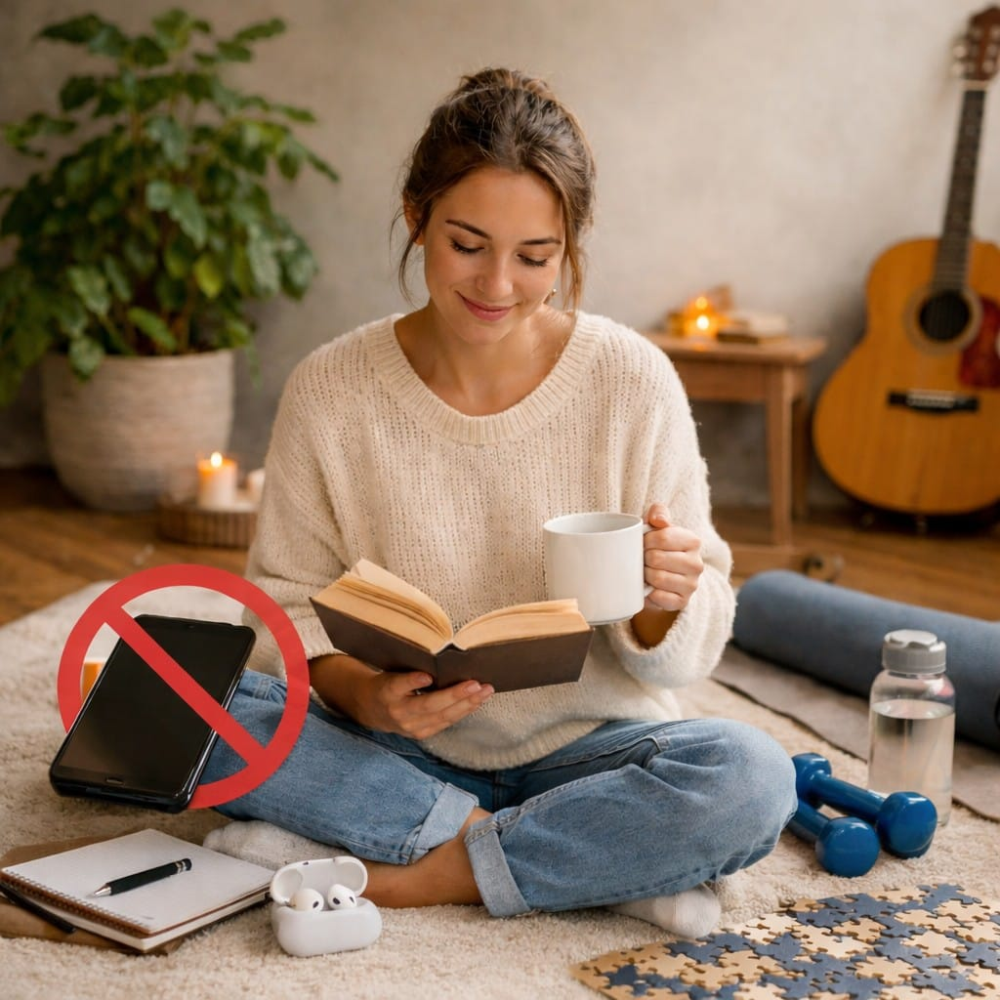

Dijital Detoks Yapın
Bildirimleri Kapatın: Gereksiz tüm uygulama bildirimlerini susturarak dikkatinizin dağılmasını önleyin.
Yataktan Önce Uzaklaşın: Uykudan en az 1 saat önce telefon kullanımını bırakarak mavi ışığın etkilerinden korunun.
Telefonsuz Bölgeler Oluşturun: Yemek masası veya yatak odası gibi alanları "telefonsuz bölge" ilan edin.
Bilinçli Kullanım Stratejileri
Zaman Sınırı Koyun: Akıllı telefonlardaki "Ekran Süresi" ayarlarını kullanarak uygulamalara günlük kota koyun.
Takibi Bırakın: Size kendinizi kötü hissettiren veya sürekli karşılaştırma yapmanıza neden olan hesapları takip etmeyi bırakın.
Hobilerinize Zaman Ayırın: Ekran başında geçirdiğiniz zamanı, kitap okuma, spor veya bir hobi ile değiştirin.

Ne Zaman Destek Almalı?
Kendi başınıza aldığınız önlemler yeterli gelmiyorsa ve bu durum hayatınızı ciddi şekilde aksatıyorsa bir uzmandan yardım almaktan çekinmeyin.
Psikolojik danışmanlık, dijital bağımlılıkla başa çıkmada bilişsel davranışçı terapi yöntemleriyle size kalıcı çözümler sunabilir.